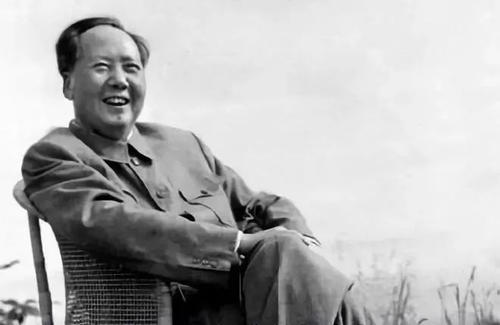
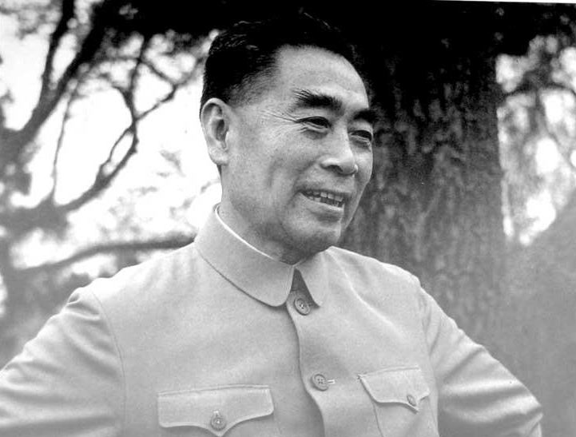
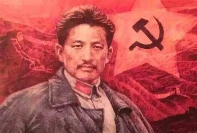
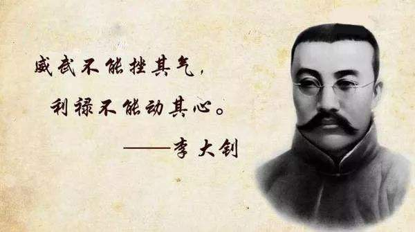
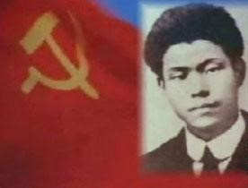
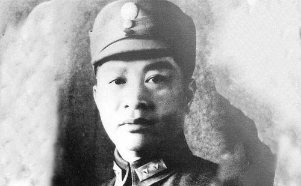

资讯
热点社评
校内快讯
爱国人物科普
爱国知识科普
疫情防护科普
登录虎嗅
短信快捷登录
+86
登 录
极速注册
+86
注 册
活动-天大毛概
爱国人物专栏
习近平谈怎样学习毛泽东

查看全文
习近平谈怎样学习毛泽东
毛泽东是中国共产党、中国人民解放军、中华人民共和国的主要缔造者，中国各族人民的伟大领袖。他是党的第一代中央领导集体的核心，是领导中国人民彻底改变自己命运和国家面貌的一代伟人。
邓小平论弘扬斗争精神
查看全文
邓小平论弘扬斗争精神
作为中国共产党第二代中央领导集体的核心，邓小平在领导开创中国特色社会主义的伟大斗争中，紧密结合时代特点和中国实际，从坚定不移走中国特色社会主义道路、发扬敢闯敢冒精神推进改革开放、坚持党的基本路线不动摇、反对官僚主义和特权现象、坚持“一国两制”维护祖国统一、维护世界和平反对霸权主义等国内国际两个大局的多个维度，深刻指明了弘扬斗争精神的重大现实意义和深远时代价值。
弘扬周恩来精神 践行初心使命

查看全文
弘扬周恩来精神 践行初心使命
周恩来同志是中国共产党人的杰出代表、党政干部学习的崇高榜样。在半个多世纪的革命生涯中，周恩来同志始终坚定理想信念，对党绝对忠诚，牢记为民宗旨，为党和人民的事业鞠躬尽瘁，体现了中国共产党人的高风亮节和崇高境界，他奋斗的一生是我们党不忘初心、牢记使命的生动缩影。
董必武：中国共产党的创始人之一
查看全文
董必武：中国共产党的创始人之一
董必武，生于1886年，湖北省红安县人，是中国共产党的创始人之一。1911年参加辛亥革命。1914年考入日本东京“私立日本大学”学习法律，在日本加入孙中山创建的中华革命党。1915年6月回国从事反袁活动，两次被捕入狱。
方志敏：伟大的共产主义战士

查看全文
方志敏：伟大的共产主义战士
“敌人只能砍下我们的头颅，决不能动摇我们的信仰！因为我们信仰的主义，乃是宇宙的真理！为着共产主义牺牲，为着苏维埃流血，那是我们十分情愿的啊！”
当我们吟诵方志敏的不朽诗篇，无不为这位伟大的共产主义战士对党和革命事业的赤胆忠心而肃然起敬。建的中华革命党。1915年6月回国从事反袁活动，两次被捕入狱。
像雷锋那样践行初心使命
查看全文
像雷锋那样践行初心使命
在“不忘初心、牢记使命”主题教育总结大会上，习近平总书记强调：“不忘初心、牢记使命，必须作为加强党的建设的永恒课题和全体党员、干部的终身课题常抓不懈。”雷锋一生都在践行我们党全心全意为人民服务的根本宗旨，实际上也是在践行我们党为中国人民谋幸福、为中华民族谋复兴的初心和使命。
李大钊：中国共产党的创始人之一

查看全文
李大钊：中国共产党的创始人之一
北京香山万安公墓内的李大钊烈士陵园，是根据中共中央的决定修建的。在墓碑上有中共中央撰写的碑文。碑文指出：李大钊同志是中国最早的马克思主义者和共产主义者，是中国共产党的主要创始人之一。他对中国人民的解放事业，对马克思主义的信仰和无产阶级的革命前途无限忠诚。他为在我国开创和发展共产主义运动的大无畏的献身精神，永远是一切革命者的光辉典范。
蔡和森：中国共产党工人运动领袖

查看全文
蔡和森：中国共产党工人运动领袖
蔡和森生于1895年，是我党早期卓越的领导人和工人运动领袖，1931年8月被国民党反动派杀害，年仅36岁。
叶 挺：中国人民解放军创建人之一

查看全文
叶 挺：中国人民解放军创建人之一
叶挺是中国人民解放军的创建人和新四军领导人，杰出的军事家。1896年出生于广东归善（今惠阳）一个农民家庭。早年追随孙中山参加革命，参加援闽粤军。1924年被派赴苏联莫斯科东方劳动者共产主义大学和红军学校中国班学习。同年10月加入中国社会主义青年团，12月转入中国共产党。
张太雷革命精神初探 ——兼论“常州三杰”的人生观
查看全文
张太雷革命精神初探 ——兼论“常州三杰”的人生观
综观张太雷29岁短暂的人生历程，由于有崇高真挚的理想信念支撑着他，使其生命虽然短暂却熠熠生辉。从张太雷一生创造的革命业绩来看，他的理想就是人类要实现共产主义，信念就是坚信马克思主义。
钟南山:最在乎的永远是病人
查看全文
钟南山:最在乎的永远是病人
2003年,非典肆虐,67岁的他说:“把病情最重的病人送到我们这里来!”
2020年,新型冠状病毒感染的肺炎爆发,84岁的他一边告诉公众“尽量不要去武汉”,一边自己登上去武汉的高铁,挂帅出征。